Overview of the RibbonBar
The RibbonBar displays a single row of options at the very top of your web browser above your DNN site. The links displayed on the left side of the RibbonBar each have drop down menus. The Mode drop down list on the right side of the RibbonBar allows you to preview your site in a number of ways.
The Admin menu is displayed to Administrators and SuperUsers. The Host menu is displayed to SuperUsers only. In DNN Platform, users must have Edit Page permissions granted to access the Modules and Pages menus.
The permissions required for Evoq Content and Evoq Content Enterprise are listed in the below tables.
The collapsed RibbonBar displays a row of links on the left hand side and a Mode drop down list on the right hand side. Depending on the users editing permissions for the current page, there will be between none and five menus displayed on the left side. I.e. SuperUsers have access to five menus (Host, Admin, Modules, Pages and Tools), Administrators have access four menus (Admin, Modules, Pages and Tools), Page Editors have access to two menus (Modules and Pages) and Module Editors cannot access any menus, however they may be able to view the Mode drop down list depending on the Control Panel configuration.
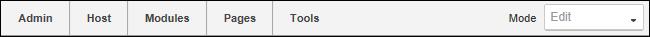
RibbonBar as displayed to SuperUsers
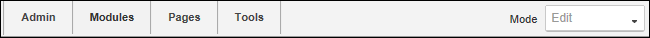
RibbonBar as displayed to Administrators
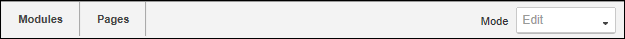
RibbonBar as displayed to Page Editor
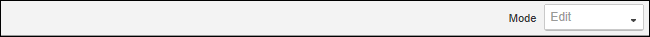
RibbonBar as displayed to Module Editors. This option may be disabled.
The Admin Menu
Administrators and SuperUsers can click on the Admin link to go to the Admin Console - OR - Mouse over the Admin link to view the Admin menu and then select the desired featured. See "About the Admin Console"

DNN Platform Admin Menu

Evoq Content Enterprise Admin Menu
The Host Menu
Hosts can click on the Host link to go to the Host Console, or mouse over the Host link to view the Host menu and select the desired page. See "About the Host Console"
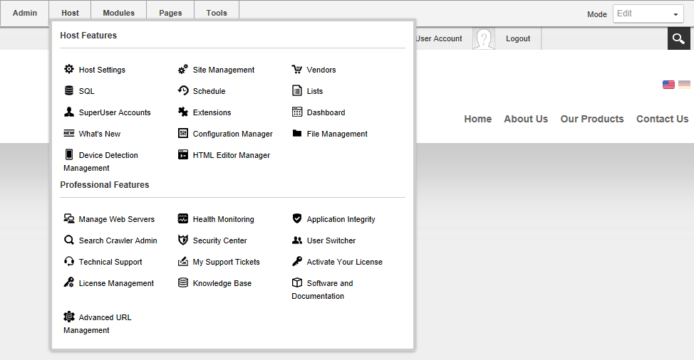
DNN Platform Host Menu
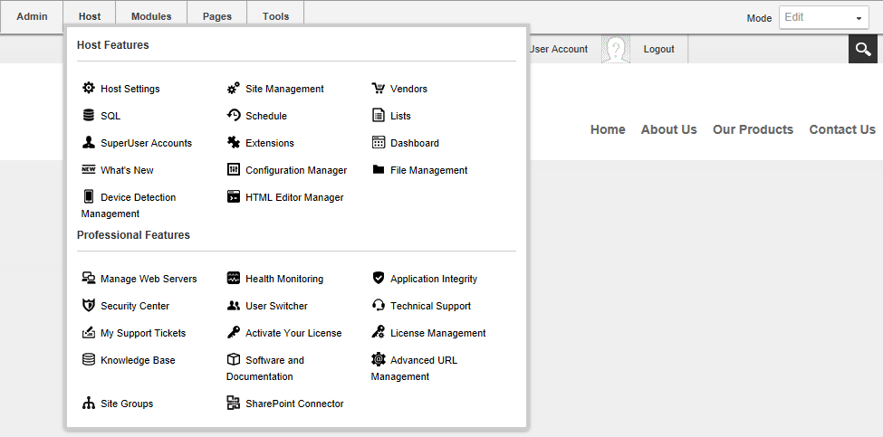
Evoq Content Enterprise Host Menu
The Modules Menu
- Add New Module: Adds a new module to the current page. See "Adding a New Module (RibbonBar)". DNN Platform users must be granted Edit Content permissions. Evoq Content and Evoq Content Enterprise users must be granted Add Content permissions.
- Add Existing Module: Adds a new instance of an existing module to the current page. See "Adding an Existing Module (RibbonBar)". DNN Platform users must be granted Edit Content permissions. Evoq Content and Evoq Content Enterprise users must be granted Add Content permissions.
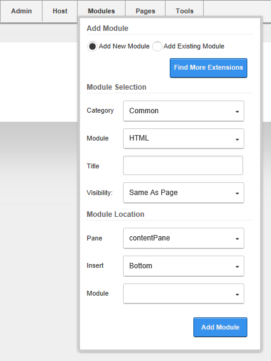
The Pages Menu
Note: In DNN Platform, user must have Edit Page permissions granted to access these tools. The permissions required for Evoq Content and Evoq Content Enterprise permissions are listed in the below table.
Actions Section
-
Page Settings: Link to edit current page settings. See "Editing Page Settings". DNN Platform users must be granted Edit Page permissions. DNN Content and Evoq Content Enterprise users must be granted Manage Settings permissions.
-
Add: Select to add a new page and configure setting. See "Adding a New Page". DNN Platform users must be granted Edit Page permissions. Evoq Content and Evoq Content Enterprise users must be granted Add Page permissions.
-
 Copy: Select to copy the current (or any other) page including modifying modules. See "Copying a Page". DNN Platform users must be granted Edit Page permissions. Evoq Content and Evoq Content Enterprise users must be granted Copy Page permissions.
Copy: Select to copy the current (or any other) page including modifying modules. See "Copying a Page". DNN Platform users must be granted Edit Page permissions. Evoq Content and Evoq Content Enterprise users must be granted Copy Page permissions.
-
 Delete: Link to delete current page. See "Deleting a Page". This option is disabled if the current page is a special page, that is a page that has been set as either Home, User Profile, etc.
DNN Platform users must be granted Edit Page permissions. Evoq Content and Evoq Content Enterprise users must be granted Delete Page permissions.
Delete: Link to delete current page. See "Deleting a Page". This option is disabled if the current page is a special page, that is a page that has been set as either Home, User Profile, etc.
DNN Platform users must be granted Edit Page permissions. Evoq Content and Evoq Content Enterprise users must be granted Delete Page permissions.
-
 Import: Link to import a page. See "Importing a New Page". DNN Platform users must be granted Edit Page permissions. Evoq Content and Evoq Content Enterprise users must be granted Import Page permissions.
Import: Link to import a page. See "Importing a New Page". DNN Platform users must be granted Edit Page permissions. Evoq Content and Evoq Content Enterprise users must be granted Import Page permissions.
-
Export: Link to export a page. See "Exporting a Page". DNN Platform users must be granted Edit Page permissions. Evoq Content and Evoq Content Enterprise users must be granted Export Page permissions.
Copy Actions Section
-
Copy Permissions to Children: Copy current page permission to children pages. See "Copying Permissions to Children Pages". Enabled if page has child pages.
In DNN Platform, only Administrator can perform this task.Evoq Content and Evoq Content Enterprise users must be granted Manage Settings permissions.
-
Copy Design to Children: Copy current page design (skin and container settings) to children. See "Copying Design to Child Pages".. DNN Platform users must be granted Edit Page permissions. Evoq Content and Evoq Content Enterprise users must be granted Manage Settings permissions.
Add New Page Section
- Add New Page: Add a new page directly from the Control Panel. See "Quick Add a New Page (RibbonBar)"
- Update Current Page: Update the page name, menu options and skin for the current page.
DNN Platform users must be granted Edit Page permissions. Evoq Content and Evoq Content Enterprise users must be granted Manage Settings permissions.
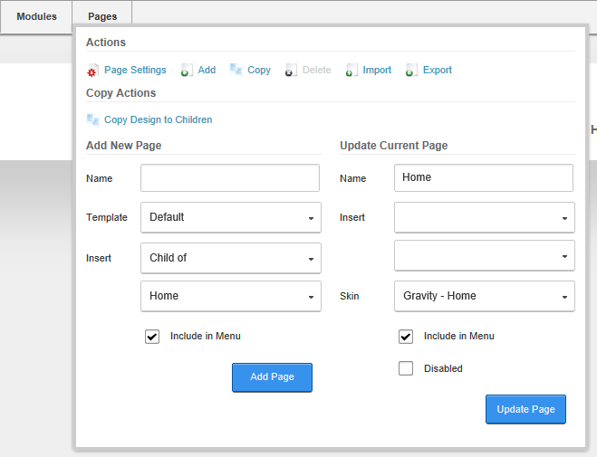
Pages Menu of the RibbonBar as displayed to Page Editors
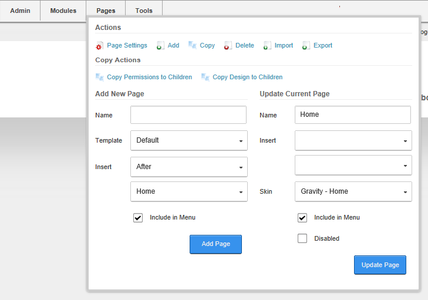
Pages Menu of the RibbonBar as displayed to Administrators
and SuperUsers
The Tools Menu
Common Actions Section
-
Add User: Opens the Add User page. See "Adding a User Account". Restricted to Administrators and SuperUsers.
-
Add Role: Opens the Add Role page. See "Adding a Security Role (Basic Settings)". Restricted to Administrators and SuperUsers.
-
 Upload File: Opens the upload file interface of the site's Digital Asset Management module that is located on the Admin > File Management page. See "Uploading Files". Restricted to Administrators and SuperUsers.
Upload File: Opens the upload file interface of the site's Digital Asset Management module that is located on the Admin > File Management page. See "Uploading Files". Restricted to Administrators and SuperUsers.
-
 Clear Cache: Select to clear the cache of all old files. Restricted to SuperUsers only.
Clear Cache: Select to clear the cache of all old files. Restricted to SuperUsers only.
-
 Recycle Application Pool: Select to restart the server and retrieve all new files. Restricted to SuperUsers only.
Recycle Application Pool: Select to restart the server and retrieve all new files. Restricted to SuperUsers only.
Advanced Tools Section
-
Web Servers: See "About the Web Server Manager Module". Restricted to SuperUsers only.
-
Support: Opens the DNN Support center page of the DotNetNuke website. Restricted to SuperUsers only.
-
Integrity: See "About the File Integrity Checker Module". Restricted to SuperUsers only.
View Website Section
Switch between sites (sites) using the RibbonBar. Performing this task will take you to the default page of the selected site which will be the page set as Home or the Splash page. Restricted to SuperUsers only.
- Hover over the Tools link.
- Go to the View Website section.
- At Sites, select the site you want to go to from the drop down list.
- Click the Switch Site link.
Help Section
-
Help: Opens the Help resource for this site. Link (new window) to Help URL defined in Host Settings.See "Setting the Online Help URL". Restricted to Administrators only.
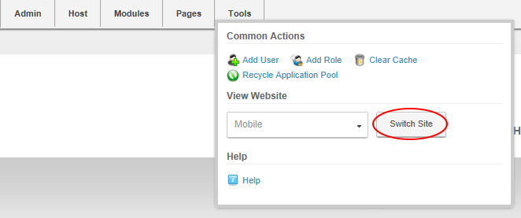

The Tools menu of the RibbonBar as displayed to Administrators
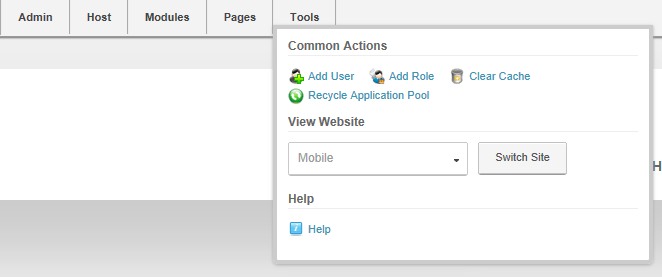
The Tools menu of the RibbonBar as displayed to SuperUsers
Setting the RibbonBar Mode
How to select the mode that you view your site in. Important. You cannot edit module content in View mode. Click on the Mode drop down list to view the mode options.
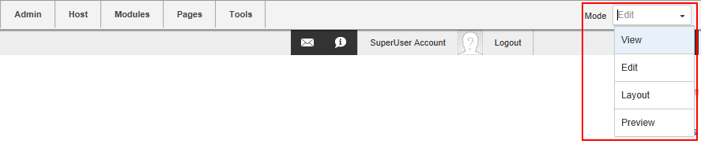
Select from the following modes:
View: Select to view your site as a typical user without editing rights. This hides the module actions menu on all modules and disables the Tools menu.
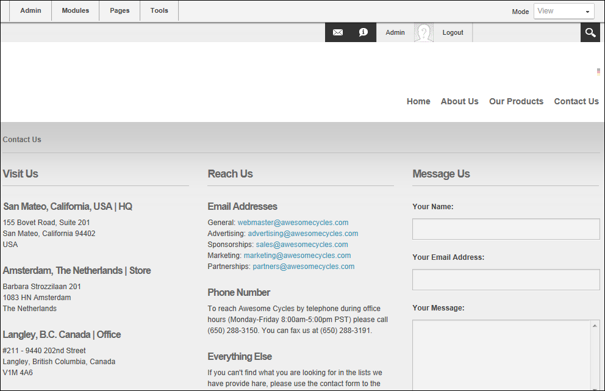
Edit: Select to edit your site. This displays the module actions menu for all modules
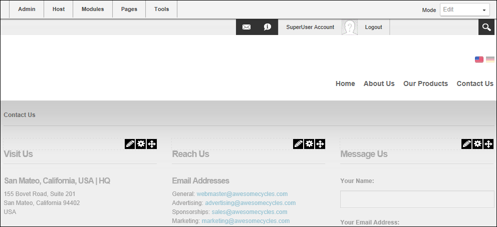
Layout: Select to view the layout of the panes within the skin that is applied to this page and the title and module actions menu of each module within each pane. Use this view to quickly view and update the page layout. This view is helpful when you want to delete or move a module but cannot access the module action menu when the content is displayed.
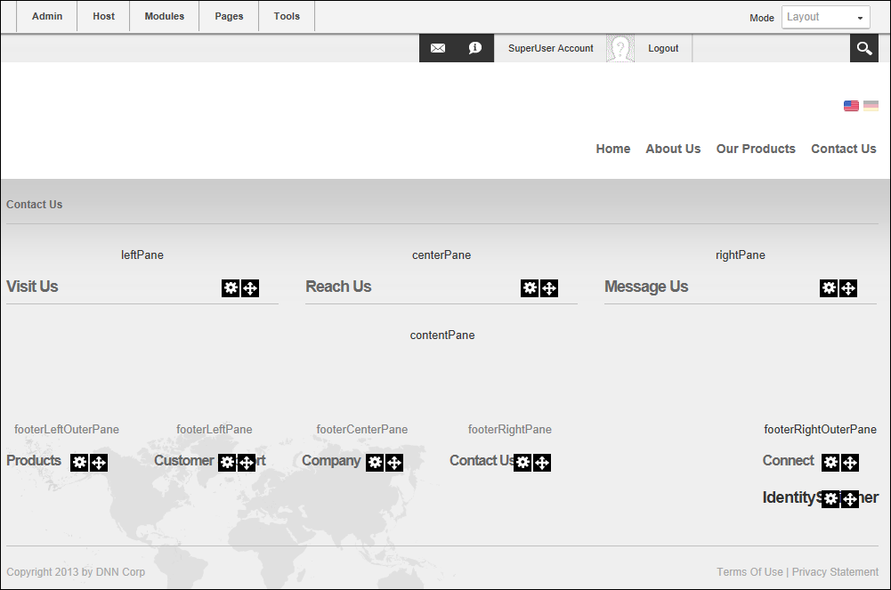
Preview: The Preview mode displays the current page as it would be viewed on a specified mobile device.
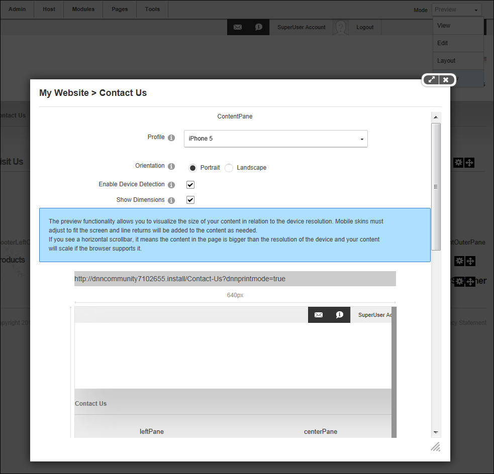